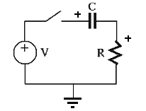

Next: Homogeneous Solution Up: Chapter 3: AC Circuit Previous: Impedance and Generalized Ohm's
If we need to find out the transient response of an AC circuit to a certain
input applied at time moment  , such as a unit step input
, such as a unit step input
| (62) |
, then the phasor method discussed
above is no longer sufficient. Now the DE describing the circuit will have
to be solved to obtain the complete solution including both the homogeneous
(transient) solution as well as the particular (steady state) solution.
As a simple example, the RC circuit shown below is composed of a resistor
 and capacitor
and capacitor  in series with an external voltage input
in series with an external voltage input  , which
is turned on at , either by a switch or a step voltage . We also
assume the initial condition that the voltage across is
, which
is turned on at , either by a switch or a step voltage . We also
assume the initial condition that the voltage across is
 at
. Any of the variables
at
. Any of the variables  ,
,  , and
, and  can be considered
as the circuit's response to this input.
can be considered
as the circuit's response to this input.

| (63) |
 is the time constant of the system with the dimension of time:
is the time constant of the system with the dimension of time:
![$\displaystyle [RC]=\frac{[V]}{[I]}\frac{[Q]}{[V]}=\frac{[Q]}{[I]}=[T]$](img225.svg) |
(64) |
or |
(65) |
 is the time constant with the dimension of time:
is the time constant with the dimension of time:
| (66) |
 is positive on top, and the polarities of
and are positive on the left.
is positive on top, and the polarities of
and are positive on the left.
In general, a first-order linear system with input  and output
and output
 can be described by a first-order linear-constant coefficient
differential equation (LCCDE) in the canonic form:
can be described by a first-order linear-constant coefficient
differential equation (LCCDE) in the canonic form:
| (67) |
 .
.
While DC circuit analysis is carried out by solving algebraic equations, the analysis of AC circuits composed of capacitors, inductors as well as resistors will require solving differential equations. The solution of a DE represents the response (or output) of the circuit to both the external input and the initial state, and is composed of two parts: